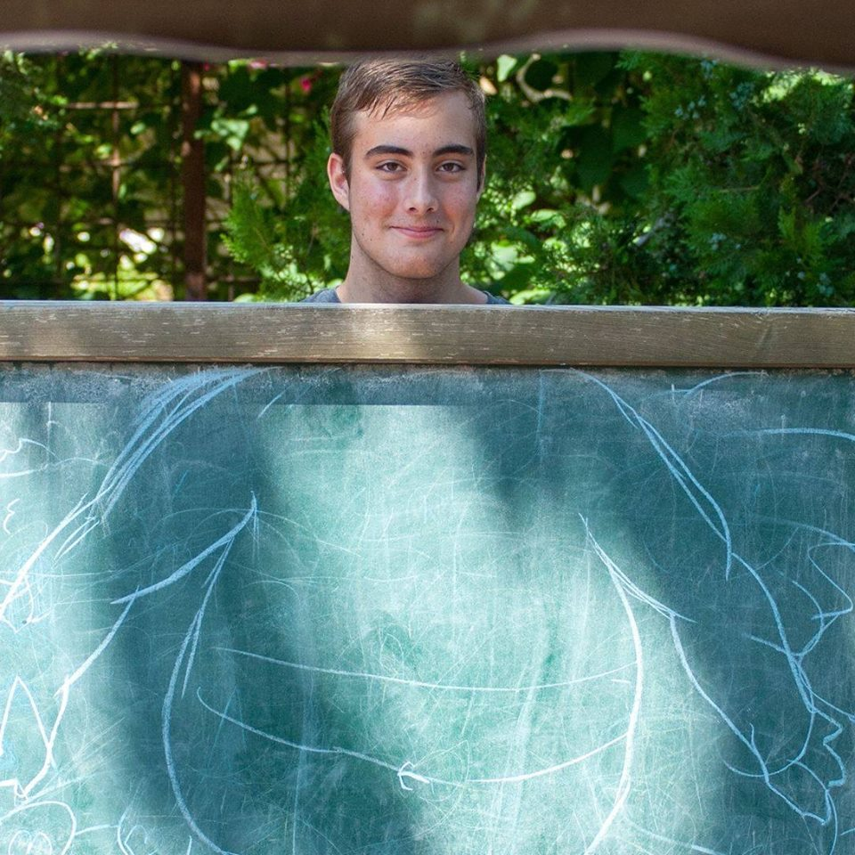

Bemutatkozás
A nevem Szász Balázs, és 2003.03.21-én születtem Budapesten. Nagyon szeretek itt élni, és egy rakat kedves emberrel ismerkedtem meg itt. A múltamról picit: Amikor kisebb voltam, olyan 3 éves körül, leköltöztünk Sopronba... Vagyis nem is Sopronba, haneme egy mellette levő kis faluba Fertőbozra. Nagyon jó kis hely volt, ezután átköltöztünk Peresztegre, ami szintén egy távolabbi hely Soprontól. Rengeteget utaztam nap mint nap, hogy beérjek a suliba, de így is egy csomószor elkéstem. :D Végül beköltöztünk Sopronba ténylegesen. Nagyon szuper barátaim voltak itt is, és nagyon hiányoznak. Most Budapesten élek a szüleimmel, és 4 testvéremmel. Jelenleg a "Neumann János Szakgimnáziumba" járok.
Hobbijaim
Nagyon szeretek még ezek mellett sorozatokat nézni. Itt is van egy-kettő a kedvenceim közül:
- Trónok harca
- Family Guy
- Breaking Bad
- Odaát
- Jojo
- Dragon Ball
Tetszett az oldalam? Értékeld!